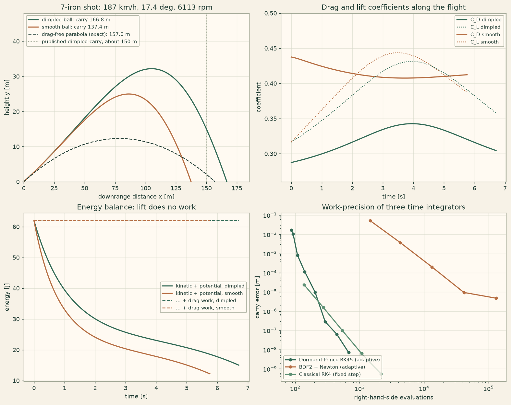

Docs › Examples › Golf ball trajectory with drag and Magnus lift
Ballistics · 0D
Golf ball trajectory with drag and Magnus lift
A 7-iron shot with backspin: why dimples make the ball fly further than a smooth one, and how three time integrators compare.
Run locally with OneSimulation. The example downloads are free. Running them requires an activated runtime. Runtime Alpha 0.2.1a7 · CPython 3.13 on macOS (Apple Silicon), Ubuntu 22.04 (x86-64), and Windows x64. Installation and activation · View pilot plans. Scope of the reference checks.

What it computes
OneSimulation integrates the planar equations of motion with speed- and spin-dependent drag and lift and decaying spin, locating apex and landing with events, using adaptive RK45, fixed-step RK4 and BDF2.
What it checks
The drag-free limit reproduces the exact parabola to 1e-14, the energy lost equals the drag work to 1e-12, and the dimpled ball carries about 20 % further than the smooth ball, as in the published comparison.
The notebook
The complete notebook, cell by cell. Run it to produce the figures and the comparison printout.
A golf ball leaves the club with speed \(U_0\), launch angle \(\theta_0\) and backspin. In flight it feels gravity, drag opposite to the velocity and Magnus lift perpendicular to it. With the speed \(U\), the cross-section \(A\) and the mass \(m\),
The coefficients depend on the Reynolds number \(Re=\rho U d/\mu\) and the spin parameter \(S=\omega d/(2U)\). For the dimpled ball \(C_D=0.24+0.18\,S\) and \(C_L=0.54\,S^{0.4}\) (Smits and Smith, Science and Golf II). The smooth ball has the drag of a smooth sphere (Morrison's correlation) and, as in the published comparison, the same lift.
Reference. Without air the trajectory is a parabola with the carry \(U_0^2\sin 2\theta_0/g\). The published result for this shot is a carry of about 150 m for the dimpled ball and a smooth ball that flies about 25 % shorter.
import numpy as np
from onesim.numerics.time import (
AdaptiveBDF,
AdaptiveRungeKutta45,
EventDefinition,
FixedStepRungeKutta,
)
from onesim.visualization import plots, theme
theme.set()
diameter, mass, air_density, air_viscosity, gravity = (
42.67e-3,
45.93e-3,
1.204,
1.825e-5,
9.80665,
)
speed, angle, spin = 187.0 / 3.6, np.radians(17.4), 6113.0 * 2 * np.pi / 60
launch = np.array([0.0, 0.0, speed * np.cos(angle), speed * np.sin(angle)])
landing = EventDefinition(
"landing", lambda t, state: state[1], direction=-1, terminal=True
)
balls = {
"dimpled": lambda reynolds, s: (0.24 + 0.18 * s, 0.54 * s**0.4),
"smooth": lambda reynolds, s: (
24 / reynolds
+ 2.6 * (reynolds / 5) / (1 + (reynolds / 5) ** 1.52)
+ 0.411 * (reynolds / 2.63e5) ** -7.94 / (1 + (reynolds / 2.63e5) ** -8.0)
+ 0.25 * (reynolds / 1e6) / (1 + reynolds / 1e6),
0.54 * s**0.4,
),
"no air": lambda reynolds, s: (0.0, 0.0),
}
def flight(ball):
"""Right-hand side of the equations of motion for the state (x, y, vx, vy)."""
def rate(time, state):
u = np.hypot(state[2], state[3])
omega = spin * np.exp(-1e-4 * u * time / diameter)
drag, lift = balls[ball](
air_density * u * diameter / air_viscosity, omega * diameter / (2 * u)
)
k = air_density * np.pi * diameter**2 / 4 * u / (2 * mass)
return np.array(
[
state[2],
state[3],
-k * (drag * state[2] + lift * state[3]),
k * (lift * state[2] - drag * state[3]) - gravity,
]
)
return rateTrajectories
The adaptive Dormand-Prince method integrates each flight; the landing is an event that stops the integration exactly at \(y=0\).
precise = AdaptiveRungeKutta45(
relative_tolerance=1e-12, absolute_tolerance=1e-14, maximum_step=0.01
)
runs = {
ball: precise.integrate(
flight(ball), launch, 0.0, 30.0, initial_step=1e-3, events=(landing,)
)
for ball in balls
}
carry = {ball: run.events[-1].state[0] for ball, run in runs.items()}
exact_carry = speed**2 * np.sin(2 * angle) / gravity
print(f"no air: carry {carry['no air']:.6f} m, exact parabola {exact_carry:.6f} m")
print(
f"dimpled: carry {carry['dimpled']:.1f} m (published: about 150 m), flight time {runs['dimpled'].events[-1].time:.2f} s"
)
print(
f"smooth: carry {carry['smooth']:.1f} m, {100 * (1 - carry['smooth'] / carry['dimpled']):.0f} % shorter (published: about 25 %)"
)Three time integrators
The dimpled-ball flight again with the adaptive Runge-Kutta method, an adaptive second-order BDF method and the classical fixed-step Runge-Kutta method, each at several accuracies. The error of the carry is measured against the precise run above.
methods = {
"Dormand-Prince (adaptive)": [
(
AdaptiveRungeKutta45(relative_tolerance=tol, absolute_tolerance=tol / 100),
{"initial_step": 1e-3},
)
for tol in (1e-3, 1e-5, 1e-7, 1e-9)
],
"BDF2 (adaptive)": [
(
AdaptiveBDF(order=2, relative_tolerance=tol, absolute_tolerance=tol / 100),
{"initial_step": 1e-3},
)
for tol in (1e-3, 1e-4, 1e-5, 1e-6)
],
"classical Runge-Kutta (fixed step)": [
(FixedStepRungeKutta("rk4"), {"step": step}) for step in (0.2, 0.1, 0.05, 0.025)
],
}
work = {}
for name, variants in methods.items():
results = [
solver.integrate(
flight("dimpled"), launch, 0.0, 30.0, events=(landing,), **options
)
for solver, options in variants
]
work[name] = (
[len(run.times) - 1 for run in results],
[abs(run.events[-1].state[0] - carry["dimpled"]) for run in results],
)
print(
f"{name:36s} steps {work[name][0]} carry error [m] "
+ ", ".join(f"{error:.1e}" for error in work[name][1])
)Figure
paths = {
f"{ball}: {carry[ball]:.1f} m": (run.states[:, 0], run.states[:, 1])
for ball, run in runs.items()
}
fig = plots.figure(1, 2, size=(14, 5))
plots.line(
y=paths,
vlines={"published carry of the dimpled ball": 150.0},
xlimits=(0, 185),
ylimits=(0, 48),
xlabel="distance [m]",
ylabel="height [m]",
title="7-iron shot: 187 km/h, 17.4°, 6113 rpm",
legend="upper left",
ax=fig[0],
)
plots.line(
y=work,
markers=True,
scale="loglog",
xlabel="time steps",
ylabel="error of the carry [m]",
title="Accuracy against work for three integrators",
legend="lower left",
ax=fig[1],
)
plots.show()Going further
Add a head wind by subtracting it from the velocity in flight, tilt the spin axis for a slice in three dimensions, or sweep the launch angle to find the longest carry.